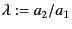
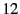
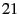
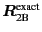
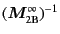

Next: Periodic Boundary Condition
Up: Lubrication
Previous: Top Layer
All information necessary to calculate the interactions for
polydisperse systems are stored in the struct twobody_f
for each pair characterized by the size ratio
.
- calc_lub_[f,ft,fts]_2b_poly() in f.c, ft.c, fts.c:
calculate lubrication forces (and torques and stresslets) by
for particles i1 and i2
at x1[3] and x2[3], respectively.
This calculation is done in the SD scaling,
achieved by the function
scalars_res_poly_scale_SD().
The function
scalars_lub_poly_full() is called
to obtain the scalar functions of the lubrication matrix.
- scalars_lub_poly_full() in minv-poly.c:
calculate scalar functions of lubrication matrix defined by
In this routine, the functions
twobody_scalars_res() and
scalars_minv_[f,ft,fts]_poly() are called.
The former is called twice to obtain scalar functions
for - and -pairs in
,
and the latter is once for
.
The scalar functions are in the dimensional form.
- twobody_scalars_res() in twobody.c:
This routine handles whether lubrication form is used
for the exact solution (to improve the convergence), and
the scaling of the result scalar functions.
Next: Periodic Boundary Condition
Up: Lubrication
Previous: Top Layer
Kengo Ichiki 2008-10-12